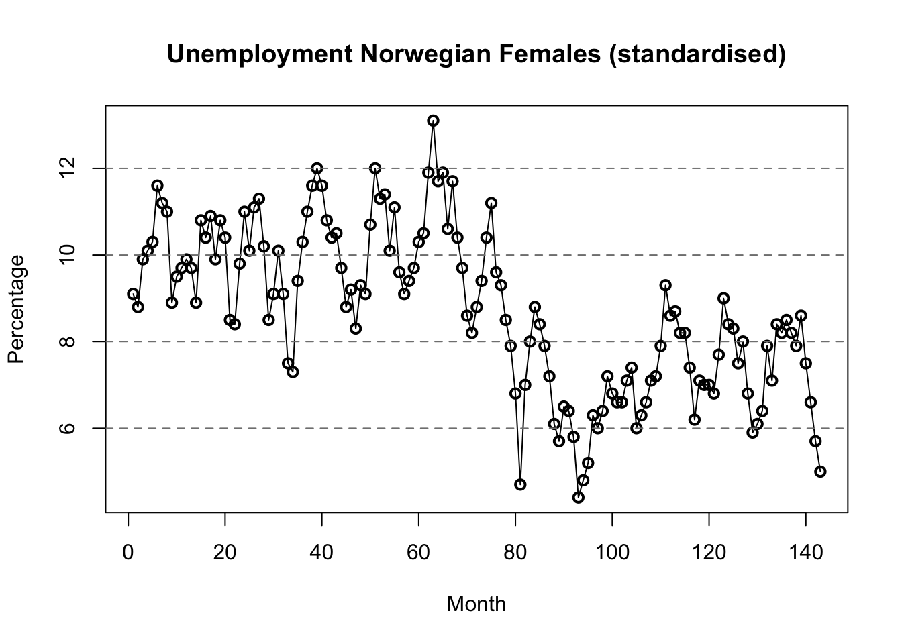
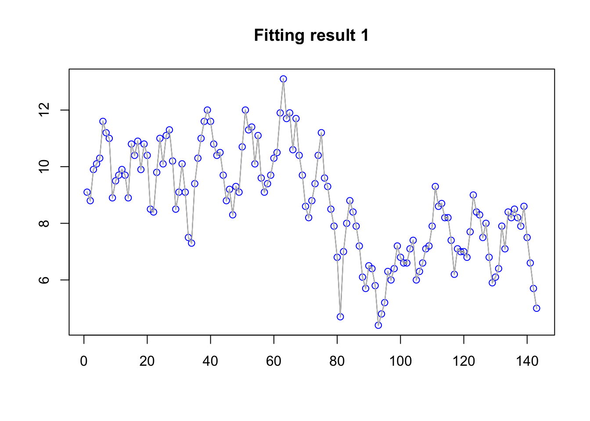
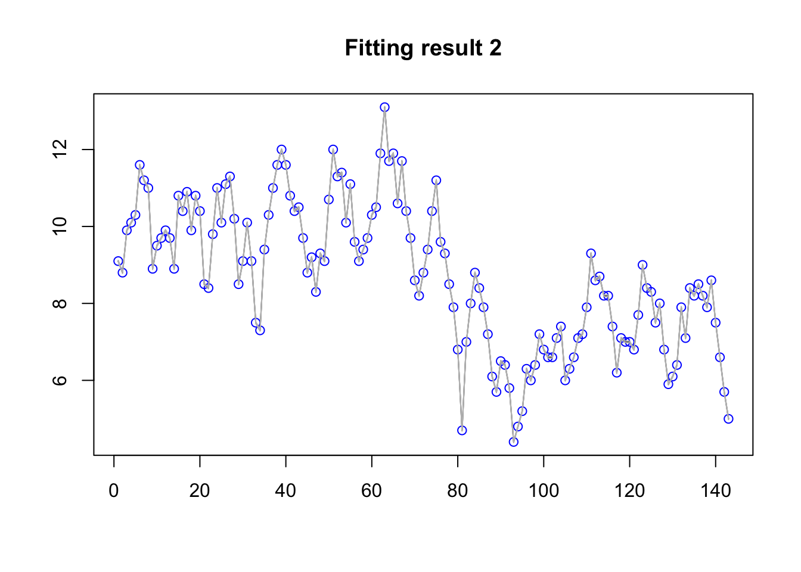

This topic is no longer maintained, please see BTopic115 instead!
library(INLA)The code on the remainder of this page assums that you have downloaded the following data file. You only need to run this once though. If you downloaded the entire “repository” to view these pages offline you can ignore this code.
dir.create("data")
download.file(url = "https://haakonbakkagit.github.io/data/harmonised-unemployment-rates-mo.csv", destfile = "data/harmonised-unemployment-rates-mo.csv")temp = read.csv("data/harmonised-unemployment-rates-mo.csv")
n = nrow(temp)-1
data = data.frame(y = temp[1:n,2], t=1:n)
dates <- temp[1:n,1]
df = data.frame(data, dates)
summary(df)## y t dates
## Min. : 4.4 Min. : 1 Length:143
## 1st Qu.: 7.2 1st Qu.: 36 Class :character
## Median : 8.8 Median : 72 Mode :character
## Mean : 8.7 Mean : 72
## 3rd Qu.:10.2 3rd Qu.:108
## Max. :13.1 Max. :143The y column is the standardised unemployment data for
females in Norway. The dates are the months at which
y was recorded. The t is equivalent to
dates but easier to use in modeling.
plot(df$t, df$y, lwd=2, col="black", xlab='Month', ylab='Percentage',
main = "Unemployment Norwegian Females (standardised)")
lines(df$t,data$y)
abline(h=2*(-8:9), lty=2, col=gray(.5))
\[y_i | \eta_i, \sigma_\epsilon \sim \mathcal N(\eta_i, \sigma_\epsilon^2) \]
The \(i\) is the index of the rows of our dataframe. The predictor \(\eta_i\), pronounced “eta”, is the structure found in the data, while the Gaussian observation adds independent noise that cannot be explained.
\[\eta_i = \beta_0 + u_i \]
We model \(u\) as an autoregressive
model of order 1 over time t.
This is described as \[u_t = \rho u_{t-1} + \epsilon_t\] where \(\epsilon_t\) is iid Gaussian randomness.
The two hyper-parameters for this component are \(\rho\) and the marginal standard deviation \(\sigma_u\).
In this case, the connection is trivial, as t=i in the
dataframe.
The hyper-parameters are \[\theta_{interpret} = \left( \sigma_\epsilon, \sigma_u, \rho \right) \] with parametrisation chosen for good interpretation. Note that this is not the same parametrisation that INLA reports, nor it is the same as INLA uses internally.
The noise is believed to be Gaussian with a small standard deviation, as the percentage scale is expoected to act in a linear fashion, except when the percentages are close to zero. The AR1 model is the simplest proper time series model. If it turns out to be too complex, we can always fix one of the parameters, e.g. fixing \(\rho=1\) gives the random walk of order 1.
When building up the model, we start with the linear predictor. The observation likelihood will be described later.
formula = y~ f(t,model='ar1')We do not have to add an intercept in the formula, as this is added
automatically. The y here is the name of the column in the
dataframe, but it is not y that is modelled, it is the
linear predictor eta corresponding to that
y.
res = inla(formula=formula,data=df,family="gaussian",
control.predictor=list(compute=TRUE))Where the control.predictor=... enables the computation
of fitted values (marginals and summary).
summary(res)##
## Call:
## c("inla.core(formula = formula, family = family, contrasts =
## contrasts, ", " data = data, quantiles = quantiles, E = E,
## offset = offset, ", " scale = scale, weights = weights,
## Ntrials = Ntrials, strata = strata, ", " lp.scale = lp.scale,
## link.covariates = link.covariates, verbose = verbose, ", "
## lincomb = lincomb, selection = selection, control.compute =
## control.compute, ", " control.predictor = control.predictor,
## control.family = control.family, ", " control.inla =
## control.inla, control.fixed = control.fixed, ", " control.mode
## = control.mode, control.expert = control.expert, ", "
## control.hazard = control.hazard, control.lincomb =
## control.lincomb, ", " control.update = control.update,
## control.lp.scale = control.lp.scale, ", " control.pardiso =
## control.pardiso, only.hyperparam = only.hyperparam, ", "
## inla.call = inla.call, inla.arg = inla.arg, num.threads =
## num.threads, ", " blas.num.threads = blas.num.threads, keep =
## keep, working.directory = working.directory, ", " silent =
## silent, inla.mode = inla.mode, safe = FALSE, debug = debug, ",
## " .parent.frame = .parent.frame)")
## Time used:
## Pre = 3, Running = 0.636, Post = 0.0242, Total = 3.66
## Fixed effects:
## mean sd 0.025quant 0.5quant 0.97quant mode kld
## (Intercept) 8.5 0.69 7.1 8.6 9.8 8.6 0
##
## Random effects:
## Name Model
## t AR1 model
##
## Model hyperparameters:
## mean sd 0.025quant
## Precision for the Gaussian observations 1.64e+04 1.69e+04 1110.026
## Precision for t 2.62e-01 8.20e-02 0.123
## Rho for t 8.94e-01 3.30e-02 0.822
## 0.5quant 0.97quant mode
## Precision for the Gaussian observations 1.13e+04 5.81e+04 3055.335
## Precision for t 2.55e-01 4.32e-01 0.241
## Rho for t 8.96e-01 9.49e-01 0.901
##
## Marginal log-Likelihood: -199.78
## is computed
## Posterior summaries for the linear predictor and the fitted values are computed
## (Posterior marginals needs also 'control.compute=list(return.marginals.predictor=TRUE)')str(res$summary.random$t)## 'data.frame': 143 obs. of 8 variables:
## $ ID : num 1 2 3 4 5 6 7 8 9 10 ...
## $ mean : num 0.551 0.251 1.351 1.551 1.751 ...
## $ sd : num 0.686 0.686 0.686 0.686 0.686 ...
## $ 0.025quant: num -0.7898 -1.0895 0.0102 0.2103 0.4104 ...
## $ 0.5quant : num 0.535 0.235 1.334 1.535 1.735 ...
## $ 0.97quant : num 1.92 1.62 2.72 2.92 3.12 ...
## $ mode : num 0.514 0.214 1.314 1.514 1.714 ...
## $ kld : num 2.22e-05 2.22e-05 2.22e-05 2.22e-05 2.22e-05 ...str(res$marginals.fixed)## List of 1
## $ (Intercept): num [1:43, 1:2] 5.07 5.2 5.72 6.67 7.1 ...
## ..- attr(*, "dimnames")=List of 2
## .. ..$ : NULL
## .. ..$ : chr [1:2] "x" "y"str(res$marginals.hyperpar, 1)## List of 3
## $ Precision for the Gaussian observations: num [1:43, 1:2] 59 119 266 701 1110 ...
## ..- attr(*, "hyperid")= chr "65001|INLA.Data1"
## ..- attr(*, "dimnames")=List of 2
## $ Precision for t : num [1:43, 1:2] 0.0488 0.0608 0.0783 0.1061 0.1227 ...
## ..- attr(*, "hyperid")= chr "14001|t"
## ..- attr(*, "dimnames")=List of 2
## $ Rho for t : num [1:43, 1:2] 0.696 0.731 0.767 0.805 0.822 ...
## ..- attr(*, "hyperid")= chr "14002|t"
## ..- attr(*, "dimnames")=List of 2A very standard plot is to plot the data with the fitted values mean estimate and quantiles. The fitted values are the \(\eta_i\) transformed through the link function (which is the identity function in this case).
plot(df$y, col="blue", main="Fitting result 1", xlab=NA, ylab=NA)
lines(res$summary.fitted.values$mean)
lines(res$summary.fitted.values$`0.02`,col="grey")
lines(res$summary.fitted.values$`0.97`,col="grey")
From this plot we see that the overfitting is disastrous. This is due to the default priors being very bad.
In the formula f(t, ...) we can specify priors, or we
can fix a parameter.
The priors that you get by default in INLA is not the ones we recommend. These old priors only exist for “backwards compatibility”. Let us now set the recommended default priors. To learn more about them:
inla.doc("pc.prec")
inla.doc("pc.cor1")formula)hyper.ar1 = list(theta1 = list(prior="pc.prec", param=c(0.02, 0.5)),
theta2 = list(prior="pc.cor1", param=c(0.9, 0.5)))hyper.family = list(theta = list(prior="pc.prec", param=c(3, 0.5)))formula2 <- y~ f(t,model='ar1', hyper=hyper.ar1)
res2 <- inla(formula=formula2,data=df,family="gaussian",
control.predictor=list(compute=TRUE),
control.family = list(hyper = hyper.family))plot(df$y, col="blue", main="Fitting result 2", xlab=NA, ylab=NA)
lines(res2$summary.fitted.values$mean)
lines(res2$summary.fitted.values$`0.02`,col="grey")
lines(res2$summary.fitted.values$`0.97`,col="grey")
6 Comments
6.1 Can I make this do anything?
With different priors you will see different patterns. To really control the pattern you see (the model fit), you can fix one or both size parameters \(\sigma_\epsilon\) and \(\sigma_u\), as these define the signal to noise ratio.
Is it problematic that we can produce whatever results we want? Yes, this is a problematic feature of the dataset. If we fit a different model, RW1 or a simple seasonal model, or if we just use default priors, we are no longer able to get any result we want. But the issue is still there, we would just loose our ability to understand it.
6.1.1 Can we fix this by model comparison?
Not really. Doing model comparison over fixed values of e.g. \(\sigma_\epsilon\) will give us an estimate, yes. But that estimate will be very sensitive to the choice of model comparison criterion!